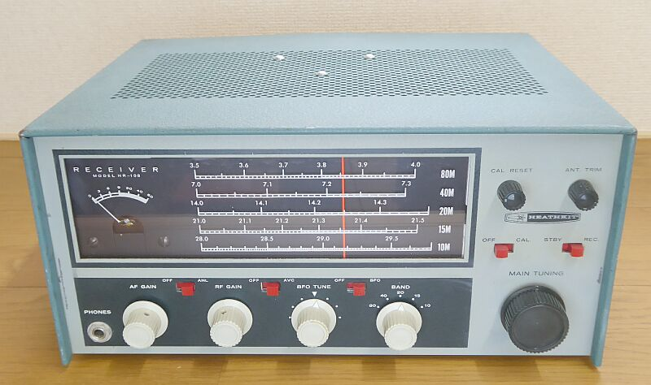
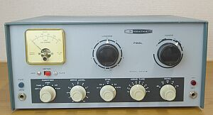
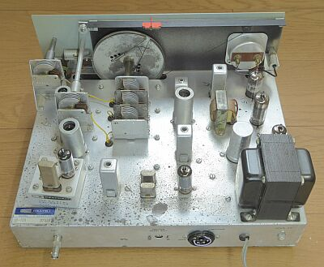
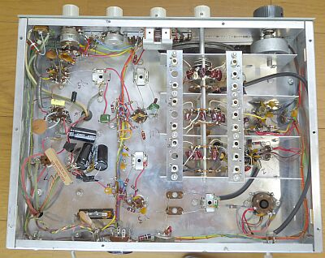

 |
３．５～２８ＭＨｚ帯をカバーするアマチュア無線専用受信機です
極めて標準的な、高一中二（４５５ＫＨｚではなく、高いＩＦ周波数）の受信機です |
１９６８年頃の製品です
３．５ＭＨｚ帯～２８ＭＨｚ帯 ＨＦ５バンドをカバーする、７球構成（整流管1本を含む）のアマチュア無線専用レシーバです
中間周波数は、１６８０ＫＨｚを採用した、高１中２のシングルコンバージョン方式で、ＡＭ、ＣＷ/ＳＳＢに対応します
まだプロダクト検波の採用はありません、ＩＦ最終段にＢＦＯ信号を絡ませる(１本の複合管の中で！）イメージです
それでも、３ＫＨｚ（－６ｄｂ） ９ＫＨｚ（－４０ｄｂ）の２クリスタル構成ラティスフィルタが採用してあります
電源は内臓で、整流管（６Ｘ４）が採用されています
当時としては、標準的な受信機かと思います 参考 Hallicrafters ＳＸ-１４０ |
|
 |
同じ時代にあった送信機 ＤＸ-６０Ｂです
ＶＦＯと一緒にご紹介しています
１９６０年代 ＨＲ－１０Ｂとのセットで、ノービスクラス向けの中心的存在だったような気がします
余談ですが、この先代は、HR-１０と、ＤＸ-６０という組み合わせでした（１９６１年発売 見た目では、ほぼ同じに見えます） |
 |
|
|
 |
シャーシ上面を後ろから写しています
左下にシャーシに乗っかって見えるのは、オプションの１００ＫＨｚマーカーユニット（ＨＲＡ-１０-１）です
ＵＳ８Ｐソケットに刺さっています
ＨＷ-１２／２２／３２シリーズにも対応したように思います
中央下に見える２つのクリスタルは、ラティスフィルタを構成するものです |
 |
シャーシ底面
極めてシンプルなシャーシ上のレイアウトです
劣化の進んだコンデンサは、交換してあります
これくらいのスペース、部品数であればキット組立は楽しめる範囲でできますね |
イメージ混信に強く、安定度を少しでも良くするために、ハイフレの中間周波数を採用、選択度はきちんしたフィルタを使って稼ぐ、このような設計思想でしょう
ＳＳＢ受信は、いわばオマケに近いと思われます
この時代は、ＳＳＢ黎明期、ましてノービス・クラスには、ＨＦのＰｈｏｎｅは許可されていません
ＯＭたちのＳＳＢ-ＱＳＯも受信できるという位置づけだろうと思います
ＱＳＯを聞いて、上級を目指す・・・そんなユーザーの空気を感じます |
| ＢＡＮＤ（ＭＨｚ） |
ＡＭ
３０％ １ＫＨｚ 変調ＯＮ／ＯＦＦで
S/N１０ｄｂが得られる信号強度 |
ビート受信（ＣＷ／ＳＳＢ）
ＲＦ信号のＯＮ／ＯＦＦで
S/N１０ｄｂが得られる信号強度 |
| ３．５ |
μV |
μV |
| ７ |
μV |
μV |
| １４ |
μV |
μＶ |
| ２１ |
μＶ |
μＶ |
| ２８ |
μＶ |
μＶ |
|
|
|
ＢＣラジオにコンバータを使ってＨＦを受信するというここまでにあった流れを、どこか受け継いでいるように思います
Ｈａｌｌｉｃｒａｆｔｅｒｓでは、中間周波数は１６５０ＫＨｚ、本機は１６８０ＫＨｚです
余談ですが、ＤＥＬＩＣＡでは、プラグ・イン・コンバータの出力は、１５００ＫＨｚ（当時の表記では、１．５Ｍｃ）でした |